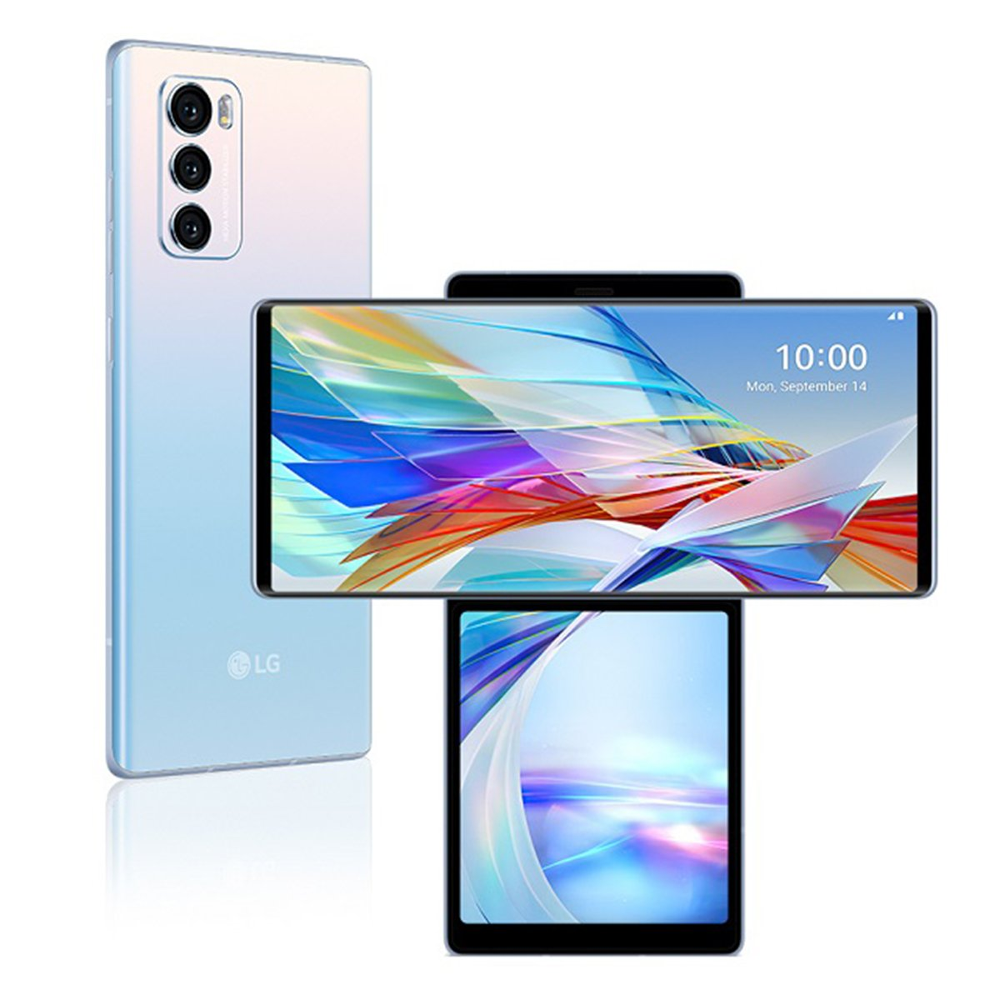

Samsung, South Korean company that is one of the world’s largest producers of electronic devices. Samsung specializes in the production of a wide variety of consumer and industry electronics,including appliances, digital media devices, semiconductors, memory chips, and integrated systems. It has become one of the most-recognizable names in technology and produces about a fifth of South Korea’s total exports.
Samsung is a big name in phone companies and has emerged as one of the top mobile brands in the world. It is a South Korean company founded on 1st March 1938. It is one of the most trusted brands in the world because of the top-notch facilities provided by the company and its long-lasting smartphones. The smartphones sold by this company are very much user-friendly, the best innovative software, proper customer care facility, cost-effective, etc. The features and facilities provided by the company have made it the most demanded smartphone brand in the world and its smartphones are the highest sold smartphones in the world.

Apple Inc., formerly Apple Computer, Inc., American manufacturer of personal computers, smartphones,tablet computers, computer peripherals, and computer software. It was the first successful personal computer company and the popularizer of the graphical user interface. Headquarters are located in Cupertino, California.It is one of the most premium mobile brands in the world. It is an American multinational technology company and is one of the biggest tech companies in the world. It was founded on April 1st, 1976 by Steve Jobs, Steve Wozniak, Ronald Wayne.he iPhone, a touch screen cellular phone, introduced in 2007 was one of the world' most successful products and the company has released several new versions since. Other popular products include iPad tablet and Apple Watch. Most recently Apple has expanded its services segments with its credit card (Apple Card), Apple News for news, Apple Arcade for games and the Apple TV+ for streaming original content produced by Apple.

It’s one of the wide-ranging smartphone brands in the world. It is a Chinese multinational company founded in 1987 by Ren Zhengfei. Popular handsets launched by this company are Huawei P30 Pro, Huawei Mate 20 Pro, Huawei P30, etc.he company was founded in 1987 by Ren Zhengfei, a former Deputy Regimental Chief in the People's Liberation Army. Initially focused on manufacturing phone switches, Huawei has expanded its business to include building telecommunications networks, providing operational and consulting services and equipment to enterprises inside and outside of China, and manufacturing communications devices for the consumer market. Huawei has over 194,000 employees as of December 2019.Just like some big tech firms, Huawei has also risen from humble beginnings. In 1987, in a small apartment in Shenzhen, 44-year-old Ren Zhengfei founded his company. What many people don’t realize is that it’s taken more than 30 years for Huawei to grow into the global tech leader it is today.
It is a Chinese multinational company founded in April 2010 by Lei Jun. With just a few years of its release, it has given a tough competition to its competitors. It’s the world’s 4th most valuable technology startup. Popular smartphones released by this company are Mi 10 Ultra, Redmi Note 9 Pro, Redmi Note 9, Redmi 9, Redmi Note 8, Poco F2 Pro, and Redmi Note 8 pro.‘Quality products at honest pricing’ is almost everyone’s need. Xiaomi has a separate fan base for its high-grade products built with cutting-edge technology at reasonable prices.The company has its presence in over 100 countries and regions and has been hailed as the world's most valued tech startup already in 2014. Xiaomi currently ranks in the 70th position on the Top 100 Most Valuable Global Brands in 2021 by Kantar BrandZ.From 2019, Xiaomi even started selling accessories such as caps, bags, glasses, backpacks, and also lunchboxes, pillows, cups, filters, umbrellas, and screwdrivers.
The brand name "Oppo" was registered in China in 2001 and launched in 2004. Since then, the company has expanded to 50 countries. In June 2016, OPPO became the largest smartphone manufacturer in China, selling its phones at more than 200,000 retail outlets.Oppo began life in 2004 and in the early days it made its name by selling high-quality Blu-ray players, amplifiers and headphones. Its entry into the phone business came in 2012, quite late in the game. Still, the company grew quickly, becoming China's top smartphone brand in Q2 2016 (a position it since ceded to Huawei, though parent company BKK is still on top cumulatively).Oppo's short history is filled with many firsts in mobile photography.The history of Oppo smartphones has so far been full of camera-related innovations.Though Oppo’s smartphone portfolio covers a wide price spectrum, the company launched its subsidiary, Realme Mobiles, to cover the budget and midrange segments. Later, Realme snapped its ties with parent Oppo and became an independent mobile phone brand.

VIVO Communication Technology Co. Ltd. Is a Chinese tech company founded in 2009 by Shen Wei. Vivo offers a wide range of phones with great features and specifications. Popular smartphones launched by the company are Vivo V17 Pro, VIVO Z1x, VIVO S1 Pro, VIVO S1, VIVO V17, VIVOZ1 Pro, VIVO S1, VIVO U20, VIVO U10, VIVO V15, VIVO Y11.This company is actually a subsidiary company of the Chinese company BBT Electronics. The company is famous for designing and developing smartphones and smartphone accessories that are low in price but good in quality. This company also provides software for smartphones and other online services. BBT Electronics also owns other companies along with Vivo Mobile Company like Oppo, Realme, and OnePlus.Vivo is now functioning in almost every corner of this world. If we talk about the current number of users of Vivo then the company has more than 200,000,000 users all around the world.Just after six and half years in 2015, Vivo ranked among the top 10 smartphone makers and providers in the world with a market share of up to 2.7% worldwide.
It’s an American multinational telecommunications company in 1928 founded by Paul and Joseph Galvin. After facing a loss of $4.3 billion from 2007 to 2009. The company got divided into two independent public companies, Motorola Mobility and Motorola Solutions in 2011. Popular mobiles launched by this company are Motorola Razr, Mate X, MOTO G8 Plus, MOTO Z4, Motorola One Action, MOTO Z3, MOTO G7 Power, MOTO G7 Plus and Motorola One Vision.On January 4, 2011, Motorola separated into two independent, publicly-traded companies: Motorola Solutions and Motorola Mobility.Motorola Solutions (NYSE:MSI) provided mission-critical communication products and services for enterprise and government customers.Motorola Mobility made mobile cellular devices and cable video management equipment and was acquired by Google for $12.5 bn in 2011. The company was subsequently sold to Lenovo in 2014 for $2.5bn.
LENOVO is a Hong Kong based multinational company founded by Liu Chuanzhi on 1st November 1984. The phones launched by Lenovo are cheap and with the best specification. Smartphones launched by this company is Lenovo Z5, Lenovo K5 Note, Lenovo P2, Lenovo Z2 Plus, Lenovo K6 Power, Lenovo Vibe k5, Lenovo Vibe K5 Note, Lenovo Z5s, Lenovo Z5 Pro GT.The company was incorporated in Hong Kong in 1988 and would grow to be the largest PC company in China. Legend Holdings changed its name to Lenovo in 2004 and, in 2005, acquired the former Personal Computer Division of IBM, the company that invented the PC industry in 1981.Today, with more than 55 000 employees in over 60 countries serving customers in over 160, Lenovo is the world’s leading personal technology company. Lenovo is headquartered in Hong Kong with its centers worldwide, the largest being Beijing and Morrisville.Sales Per Year 35 million units, Revenue Per Year USD 14billion makes it 8th in the list.
LG Electronics is a South Korean multinational company founded by Koo-In-hwoi in 1958. The popular smartphones launched by LG are LG G7 Plus ThinkQ, LG W10 Alpha, LG V30 Plus, LG Stylo 5, LG Q70, and LGK61. The smartphones launched by LG didn’t gain a lot of popularity in many countries.Revenue Per Year 54.9 billion USD makes its ninth rank in the list.In April 2021, after months of speculation, LG confirmed that the smartphone division will be officially shut down in July 2021.[66] The decision to shut down LG Mobile came about from poor sales caused by stiff competition from rival Samsung and Chinese budget brands such as Oppo and Xiaomi. LG became the first major smartphone brand to completely withdraw from the market.LG Electronics used to manufacture smartphones and tablet devices.On 7 September 2016, LG unveiled the V20,[63] and the V30 was announced on 31 August 2017. LG G6 was officially announced during MWC 2017 on 26 February 2017.[64] The G7 ThinQ model was announced at a 2 May 2018 media briefing.
Nokia is a multinational company founded by Fredrik Idestam, Leo Mechelin, Eduard Finland on 12 May 1865. Before Nokia used to rule the mobile market but as the technology evolved and smartphones were introduced the company couldn’t perform better and by now they are selling smartphones and trying to get better day by day. Popular smartphones launched by Nokia are Nokia 2.3, Nokia 220, Nokia110, Nokia6.2, Nokia 3.2, Nokia9 Pureview, Nokia 8.1, etc.From its humble beginning in 1865 as a single paper mill operation, Nokia has found and nurtured success over the years in a range of industrial sectors including cable, paper products, rubber boots, tires, televisions and mobile phones. Nokia's transition to a primary focus on telecommunications began in the 1990s.It is the 10th ranked smartphone brand in the list with its annual sales of more than 17.5 million smartphones.